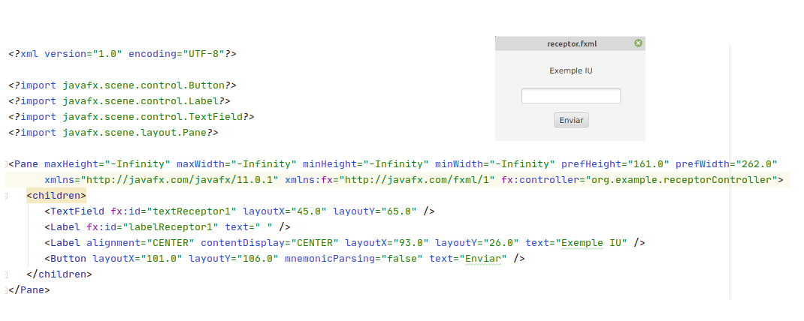
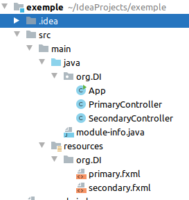
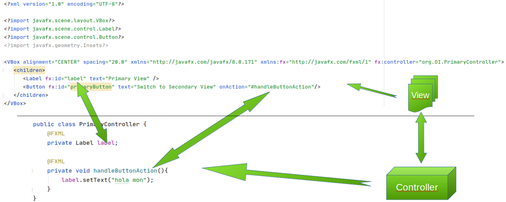

El disseny de les interficies en JavaFX es defineix mitjançant un llenguatge basat en XML, el que ens permet tenir separades la part del codi i la representació visual.

La construcció d’aquestes aplicacions utilitza un estil d’arquitectura en les que separa les dades d’una aplicaació, la interficie d’usuari i la llogica de control en tres components diferents. Es el que es coneix com a MVC (Model-Vista-Controlador). Aquesta arquitectura es divideix en tres capes diferents:
Quan creem un nou projecte en el que li indiquem que volem un archetype fxml, tenim que ens creea un projecte com el seguent:

En ella trobem:
Seguidament es poden observar els elements que acabem d’explicar (la vista i el controlador) d’un exemple molt bàsic.

En aquest mòodul anem a centrar-se en la part gràfica de la creació de les aplicacions. Per tal de manipular els fitxers fxml, treballarem en l’aplicaió scene Builder.